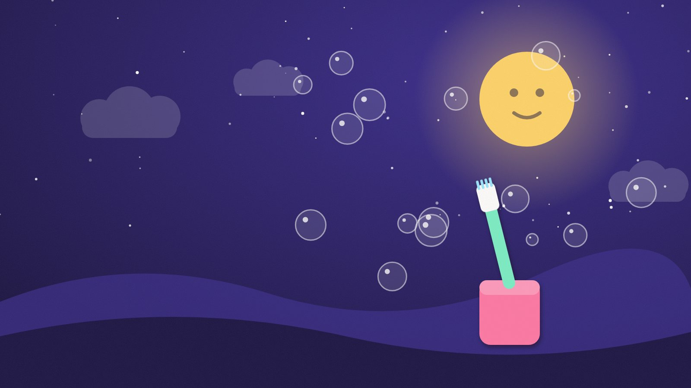

JuegosSalón
Salón
Recreativo
Minijuegos gratis y sin anuncios: carreras, fútbol, ritmo, juegos con cámara y mucho más. En el móvil y en el ordenador.
Entrar al Salón →
SeriesAlica
Alica
Play
Series de animación originales: para adultos y para los peques. Episodios nuevos cada temporada.
Ver series →Lo último del estudio
Los estrenos más recientes del Salón y de Alica Play.
Juego


Vaquilla PartyPueblo contra pueblo en las fiestas
JuegoZampa MundoTrágatelo todo y crece
JuegoIsla TropiezoCorre, salta y empuja hasta la final
JuegoEl Gran SaltoAlta Temporada · Salto de esquí
JuegoLa Gran PiruetaAlta Temporada · Esquí acrobático
JuegoKauai MinigolfCampeonato Hawaiano en 6 islas
SerieLLOGUEREl piso lo ha visto todo. Y ahora habla.
Serie
TicoPequeñas aventuras para las rutinas de cada día.
Qué hacemos
Un estudio pequeño con dos líneas de trabajo.
01
Juegos para el navegador
Se abren y se juegan al momento, sin descargas ni registro. Pantalla completa en móvil y PC.
02
Series de animación
Historias originales con estilo propio: collage de papel para adultos, cortos para los más peques.
03
Hecho en Barcelona
Ideas, guiones, música y animación creados en el estudio de Enric Alicarte.